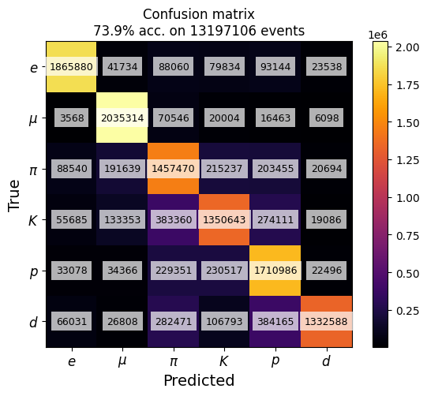

Documentation
Image type:
Confusion
Accuracy
Weights
Likelihood ratios
Numbers of events
Contributions
Choose plot:
Confusion
Detector confusion
Ablation confusion
Particle type:
All
Electron
Muon
Pion
Kaon
Proton
Deuteron
Correctness:
Correctly identified
Incorrectly identified
All
Split subplots by:
Correctness of identification
Detector
Particle type
Use trained calibration weights?
Plot difference from standard, unweighted?
Normalize values by row?
Binned?
p: [0.5, 1.0] GeV
theta: [17°, 28°]
